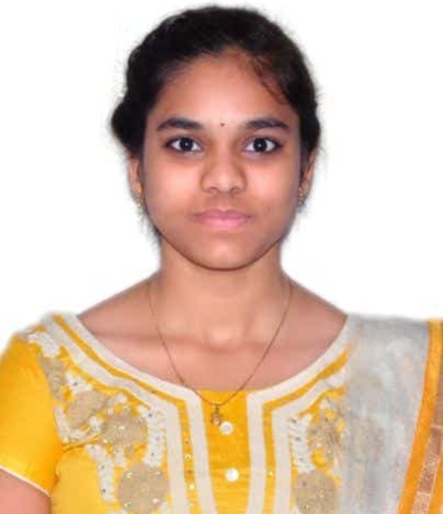

GEYA VARSHINI BALAGA

SUMMARY
Iam a Hardworking and dedicated to my Work. Highly motivated and detail-oriented Computer Science student
seeking
an internship opportunity at
Goldman Sachs. Proficient in communication, time management, adaptability, web development, and
programming.
SKILLS
- Programming Languages : Java,Python
- Web Development : Knowledge in HTML,CSS,JavaScript
- Database Management : SQL,ExcelSheet,PowerBI
- Software Tools : Git,GitHub
EDUCATION
-
Bachelor of Technology
- Vignan's LARA Institute of Technology and Science
- Currently Pursuing 3rd Year in Computer Science
- CGPA:8.4
-
Board of Intermediate - MPC
- Bhashyam Junior College
- Percentage: 93.5
-
Secondary School Certicate (10th)
- Sri Chaitanya School
- Percentage:100
INTERESTS
- Web Development
- Data Analyst
- Technology Trends
- Open Source Contribution
CERTIFICATIONS
- Certifications in HTML and CSS and NOSQL Database: Infosys Springboard
- SQL and Relational Database certificates : Expertise in SQL for relational database management system
from IBM
- Cisco Networking Academy : CyberSecurity,Python Essentials - Learned key concepts
- CodeChef : Learn Python,Learn C++ - Focused on Basic concepts like class,objects,functions,inheritance and
polymorphism
- Swayam NPTEL : Joy of Computing,Programming in Java - Acquired expertise knowledge in Java,including data
structures,object,Event handlers
OTHERS